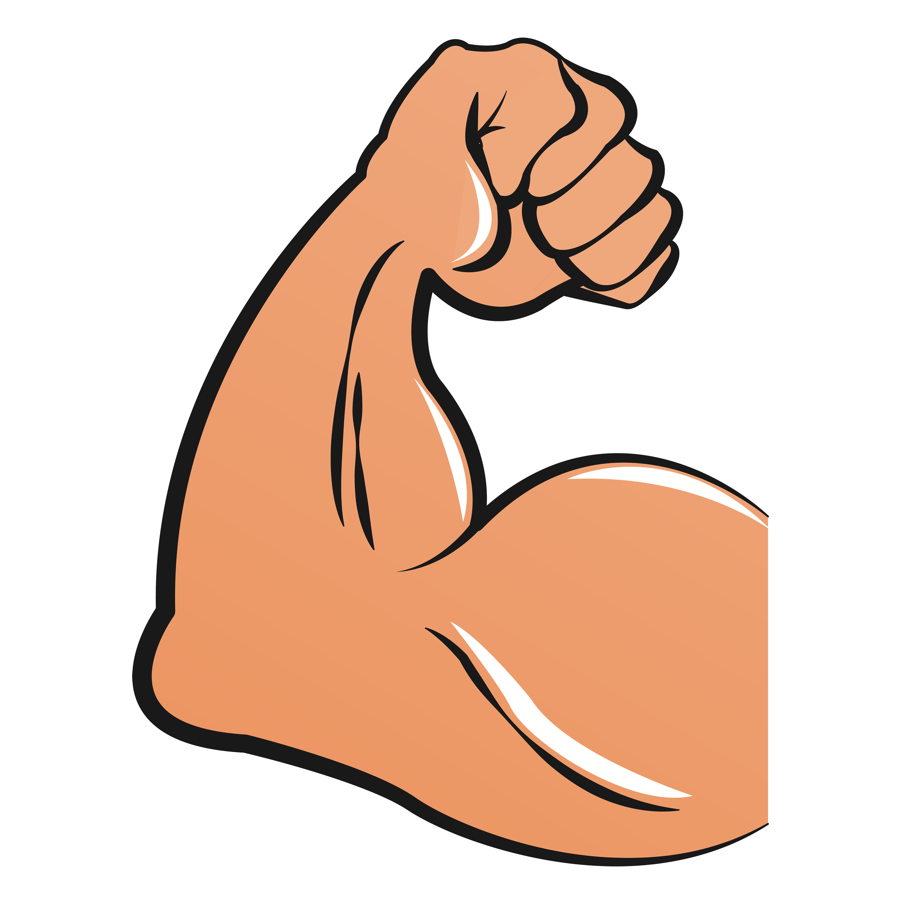

ABOUT ME
Intro
Welcome to my personal web page. I'm Patryk, a passionate first-year Computer Science student in UCC discovering the depths of the world of technology.
Background
When I was just one year old, my family moved from Poland to Ireland. Although I was very young at the time, this transition laid the foundation for my multicultural upbringing. Growing up between these two countries from such an early age instilled in me a sense of adaptability and an appreciation for diverse backgrounds, shaping my worldview in profound ways.
Future
I'm all about innovating and problem-solving, and I can't wait to use what I've learned to jump into areas like software development, AI, or cybersecurity. I want to be where the action is, pushing boundaries, learning non-stop, and tackling challenges as chances to grow.
HOBBIES
Sports

I'm a huge football fan, and I'm all about Manchester City. Watching them play is my jam—the tactics, teamwork, and those epic moments on the field keep me hooked. It's not just a game; it's a rollercoaster of emotions that makes me love football even more, especially when it's City showing their unstoppable spirit.
Gym
In early 2022, I embarked on my gym journey, and it's been a constant ever since. Initially, it was about learning the ropes, but it quickly turned into a regular habit. The gym's atmosphere and the progress I've seen, both physically and mentally, keep me motivated. It's more than just exercise; it's about feeling strong and focused.
My workout routine follows the Arnold Split, inspired by Arnold Schwarzenegger's training philosophy. This method organizes my weekly workouts to focus on specific muscle groups each day—chest and back, shoulders and arms, and legs. It's a structured approach that ensures each muscle gets attention while allowing ample recovery time. This split has been a game-changer, helping me achieve a more balanced and effective fitness routine.